πρόσωπα
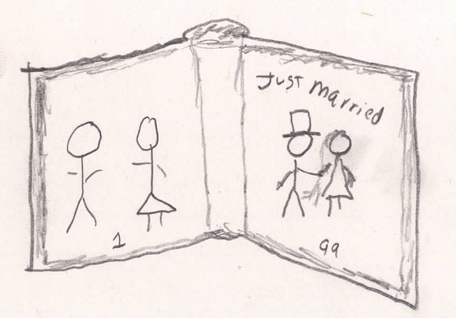
πρόσωπα· Γρηγόριος, Εὐγενίᾱ, Ἀλέξιος, Δημήτριος, Εἰρήνη, Σοφίᾱ.
ᾄδει
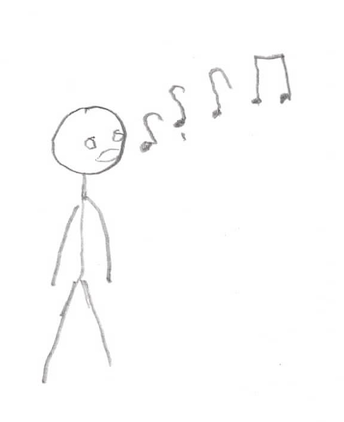
χαίρει
Σοφίᾱ ᾄδει. ἡ Σοφίᾱ χαίρει.
Δημήτριος «στ!». ὁ Δημήτριος οὐ χαίρει.
ἡ δὲ Σοφίᾱ ἔτι ᾄδει.
ὀργίζεται
ὁ δὲ Δημήτριος «στ!». ὁ Δημήτριος οὐ χαίρει, ἀλλὰ ὀργίζεται.
ἡ δὲ Σοφίᾱ ἔτι ᾄδει.
παίει
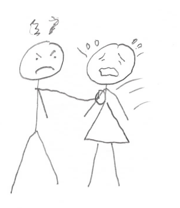
ὁ δὲ Δημήτριος τὴν Σωφίᾱν παίει.
δακρῡ́ει
γελᾷ
ἡ δὲ Σοφίᾱ νῦν οὐκ ᾄδει, ἀλλὰ δακρῡ́ει.
ὁ δὲ Δημήτριος γελᾷ, «ἃ ἅ».
ὁρᾷ
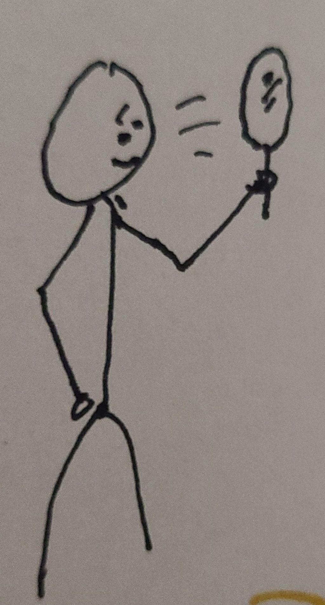
ὁ μὲν Ἀλέξιος Δημήτριον ὁρᾷ, ὁ δὲ Δημήτριος τὸν Ἀλέξιον οὐχ ὁρᾷ.
λέγει
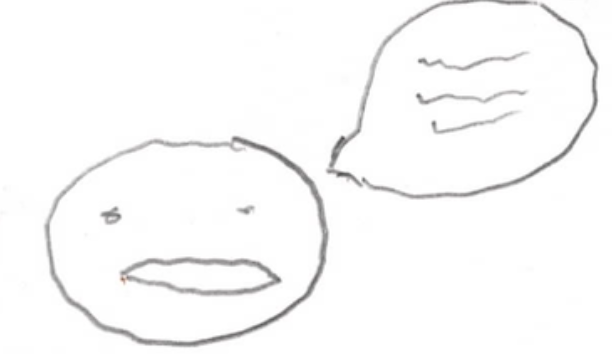
ὁ Ἀλέξιος λέγει «τί; ὁ Δημήτριος κόρην παίει, καὶ γελᾷ;»
ὁ Ἀλέξιος ὀργίζεται, καὶ τὸν Δημήτριον παίει.
ὁ δὲ Δημήτριος νῦν οὐ γελᾷ, ἀλλὰ δακρῡ́ει. ὁ Δημήτριος τὸν Ἀλέξιον παίει.
ἡ δὲ Σοφίᾱ λέγει «ποῦ ἐστιν ἡ μήτηρ;»
ἡ Σοφίᾱ τὴν Εὐγενίᾱν οὐχ ὁρᾷ. ἡ Σοφίᾱ καλεῖ τὴν Εὐγενίᾱν «μῆτερ, μῆ-τερ, ὁ Δημήτριός με παίει.»
ἔρχεται
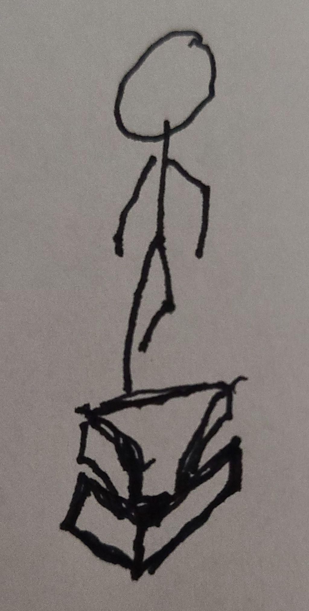
ἡ μὲν Εὐγενίᾱ οὐκ ἔρχεται, ὁ δὲ Γρηγόριος ἔρχεται.
ἐρωτᾷ ↔︎ ἀποκρῑ́νεται*
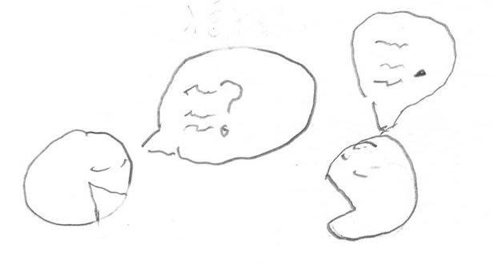
Γρηγόριος ἐρωτᾷ «τίς με καλεῖ;»
ὁ δὲ Ἀλέξιος ἀποκρῑ́νεται «οὐδείς σε καλεῖ, τὴν δὲ μητέρα καλεῖ ἡ Σοφίᾱ.»
πάρειμι = ἐνθάδε ἐστίν ↔︎ ἐνθάδε οὐκ ἔστιν
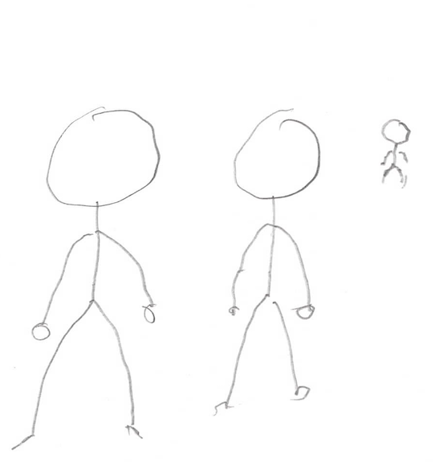
διὰ τί;
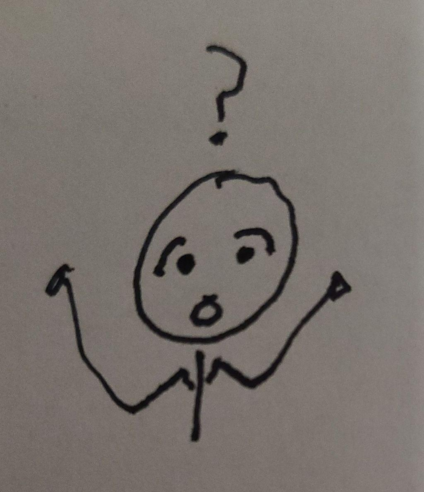
ὁ δὲ Γρηγόριος ἐρωτᾷ τὸν Ἀλέξιον «τὴν μὲν μητέρα καλεῖ, ἐγὼ δὲ πάρειμι. διὰ τί ἡ Σοφίᾱ δακρῡ́ει;»
ὁ δὲ ἀποκρῑ́νεται «ἡ Σοφίᾱ δακρῡ́ει ὅτι ὁ Δημήτριος αὐτὴν παίει.»
ὁ δὲ Γρηγόριος λέγει «διὰ τί παῖς κόρην μῑκρᾱ̀ν παίει; φεῦ φεῦ. διὰ τί ὁ Δημήτριος αὐτὴν παίει;»
ὁ δὲ ἀποκρῑ́νεται «ὅτι ᾄδει ἡ Σοφίᾱ;»
πονηρός
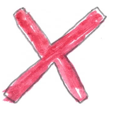
ὁ δὲ Γρηγόριος λέγει «ὦ θύγατέρ μου. ὁ Δημήτριος οὐκ ἔστιν παῖς ἀγαθός, ἀλλὰ πονηρός.»
ὁ δὲ Ἀλέξιος λέγει «ἡ Σοφίᾱ ἐστὶ κόρη ἀγαθή.»
ὁ δὲ ἀποκρῑ́νεται «ναί, ὀρθῶς, ἀλλὰ ποῦ ἐστιν ἡ μήτηρ; διὰ τί οὐκ ἔρχεται;» ὁ γὰρ πατὴρ τὴν μητέρα οὐχ ὁρᾷ.
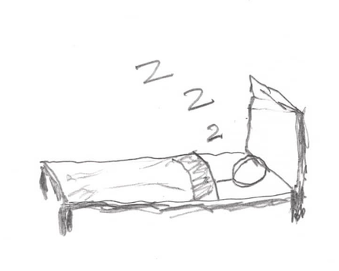
ὁ οὖν Δημήτριος ἀποκρῑ́νεται «ἡ μήτηρ καθεύδει.»
ὁ δὲ Ἀλέξιος λέγει «στ. οὐ σέ, ἀλλὰ ἐμὲ ἐρωτᾷ ὁ πατήρ.»
ὁ δὲ Γρηγόριος «παῖδες, σῑγᾶτε. ποῦ ἐστιν ἡ μήτηρ;»
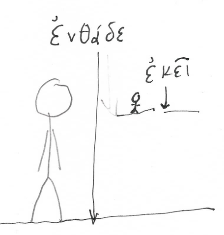
ὁ δὲ Ἀλέξιος ἀποκρῑ́νεται «ἡ μὲν μήτηρ ἐνθάδε οὐκ ἔστιν, ὁ δὲ Δημήτριός ἐστιν.»
καλεῖ οὖν ὁ Ἀλέξιος τὴν Εὐγενίᾱν «μῆ-τερ, μῆ-τερ.»
ἀκούει
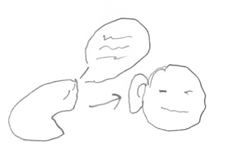
ἡ δὲ Εὐγενίᾱ οὐκ ἀκούει οὐδὲ ἔρχεται. διὰ τί οὐκ ἔρχεται; ὃτι τοῦ Ἀλεξίου οὐκ ἀκούει. διὰ τί οὐκ αὐτοῦ ἀκούει; ὃτι ἡ Εὐγενίᾱ καθεύδει.
ὁ οὖν Δημήτριος γελᾷ, «ἃ ἅ. οὐδὲ ἡ μήτηρ σοῦ ἀκούει.»
ὁ δὲ Γρηγόριος ὀργίζεται. λέγει «σῑ́γᾱ». καὶ ὁ πατὴρ τὸν υἱὸν τύπτει. τὺπ τὺπ τύπ. διὰ τί τύπτει τὸν υἱόν; ὅτι οὐκ ἀγαθὸς ὁ πατήρ. νῦν δὲ ὁ Δημήρτιος δακρῡ́ει. ἆρα ἡ Εὐγενίᾱ τοῦ Δημητρίου ἀκούει; οὐδὲ αὐτοῦ ἀκούει, οὐδὲ τοῦ Ἀλεξίου, ἀλλὰ ἔτι καθεύδει.
ἡ δὲ Εἰρήνη καὶ ἀκούει καὶ ἔρχεται.
ὁ οὖν Ἀλέξιος λέγει «ἡ μὲν μήτηρ οὐκ ἔρχεται, ἡ δὲ Εἰρήνη ἔρχεται.»
δακρῡ́ει
πολὺ δακρῡ́ει
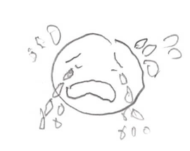
ὁ δὲ Γρηγόριος αὐτοῦ οὐκ ἀκούει, ὁ γὰρ Δημήτριος πολὺ δακρῡ́ει. ἡ δὲ Εἰρήνη τὸν Ἀλέξιον ὁρᾷ, καὶ αὐτὸν ἐρωτᾷ «διὰ τί ὁ Δημήτριος δακρῡ́ει;»
ὁ δὲ Ἀλέξιος ἀποκρῑ́νεται «ὁ Δημήτριος δακρῡ́ει ὅτι ὁ πατὴρ τύπτει αὐτόν.»
ἡ δὲ ἐρωτᾷ «ἀλλὰ διὰ τί ὁ πατὴρ αὐτὸν τύπτει;»
ὁ δὲ ἀποκρῑ́νεται «τὸν Δημήτριον τύπτει ὃτι παῖς πονηρός ἐστιν. ὁ δὲ Δημήτριος κόρην μῑκρᾱ̀ν παίει.»
ἡ δὲ Σοφίᾱ λέγει «πάτερ, ἡ Εἰρήνη ἐνθάδε ἐστίν.»
ὁ οὖν Γρηγόριος αὐτὴν ὁρᾷ, καὶ λέγει «τί ἐστιν, ὦ θύγατερ;»
ἡ δὲ ἀποκρῑ́νεται «ὦ πάτερ, διὰ τί ὁ Δημήτριος δακρῡ́ει;»
ὁ δὲ «ὅτι υἱὸς πονηρός ἐστιν. παῖς ὃς μῑκρᾱ̀ν κόρην παίει οὐκ ἔστιν ἀγαθός. ὁ ἀγαθὸς παῖς οὐ παίει κόρην.»
ὁ οὖν Γρηγόριος πάλιν αὐτὸν τύπτει· τὺπ τὺπ τύπ. ὁ μὲν οὖν Δημήτριος πολὺ δακρῡ́ει. ὁ δὲ Ἀλέξιος χαίρει, ἀλλὰ οὐ γελᾷ.
ἡ δὲ Σοφίᾱ οὐ χαίρει οὐδὲ γελᾷ. διὰ τί; ὅτι κόρη ἀγαθή ἐστιν ἡ Σοφίᾱ. ἡ δὲ Εἰρήνη δακρῡ́ει. διὰ τί καὶ ἡ Εἰρήνη δακρῡ́ει; δακρῡ́ει ὅτι ὁ πατὴρ τὸν υἱὸν τύπτει. πονηρὸς ὁ παῖς ὃς κόρην παίει, καὶ δὴ καὶ πονηρὸς ὁ ἀνὴρ ὃς μῑκρὸν παῖδα τύπτει.
παῖς γελᾷ. κόρη δακρῡ́ει.
τίς ἐστιν ὁ παῖς ὃς γελᾷ;
ὁ παῖς ὃς γελᾷ Δημήτριός ἐστιν.
τίς ἐστιν ἡ κόρη ἣ δακρῡ́ει;
ἡ κόρη ἣ δακρῡ́ει ἐστὶν Σοφίᾱ.
ὁ Δημήτριος, ὃς κόρην παίει, ἐστὶ παῖς πονηρός.
ἡ κόρη, ἣν Δημήτριος παίει, Σοφίᾱ ἐστίν.
ὁ Γρηγόριος, ὃς υἱὸν τύπτει, πονηρὸς πατήρ ἐστιν.
ὁ υἱός, ὃν ὁ Γρηγόριος τύπτει, Δημήτριός ἐστιν.
τίνα καλεῖ ἡ Σοφίᾱ; τὴν Εὐγενίᾱν καλεῖ.
ἡ Εὐγενίᾱ, ἣν Σοφίᾱ καλεῖ, ἐστὶ μήτηρ παιδίων. ἀλλὰ ὁ Γρηγόριος τὸν Δημήτριον τύπτει. ὁ παῖς, ὃν Γρηγόριος τύπτει, Δημήτριός ἐστιν.
τίνα καλεῖ ὁ Ἀλέξιος; καὶ ὁ Ἀλέξιος τὴν Εὐγενίᾱν καλεῖ. ἡ δὲ Εὐγενίᾱ οὐκ ἀκούει. τίνος ἀκούει ἡ Εὐγενίᾱ; οὐδενὸς καὶ οὐδέν.